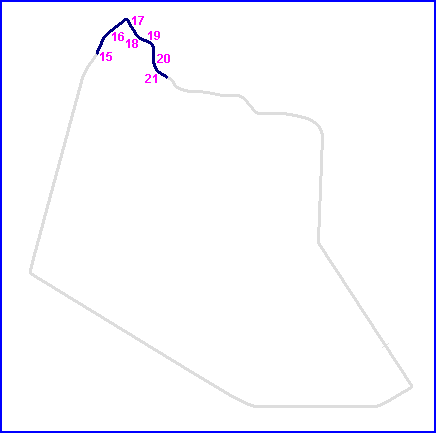
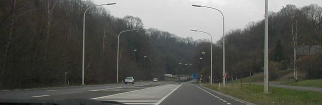
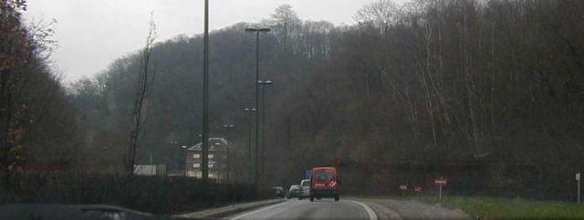
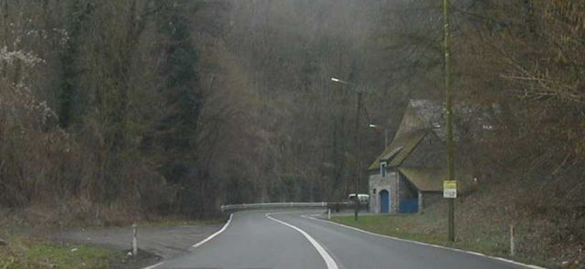
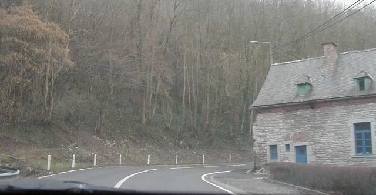
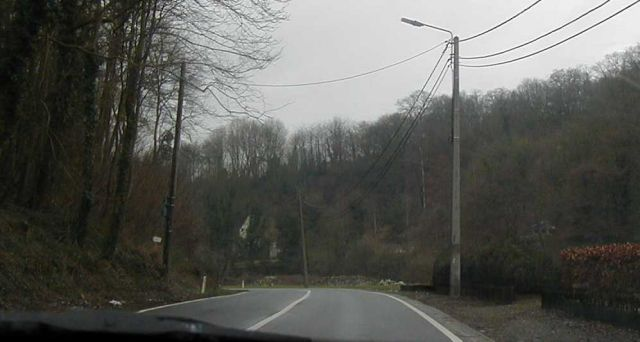
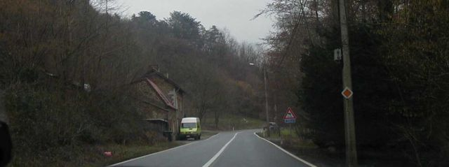

17
Floreffe - Photo's 15 to 21 (Page 3 of 5)
|| Contents | #01 to #07 | #08 to #14 | #15 to #21 | #22 to #28 | #29 to #35 || Home ||
Numbers on the map indicate where the photos were taken. Click on
the hyperlinks above to view the photographs in that section.

Return to racingcircuits.net's Photo Archive Main Index

15

16
17

18

19

20

21
©Chris Hall. Reproduced here with kind permission.